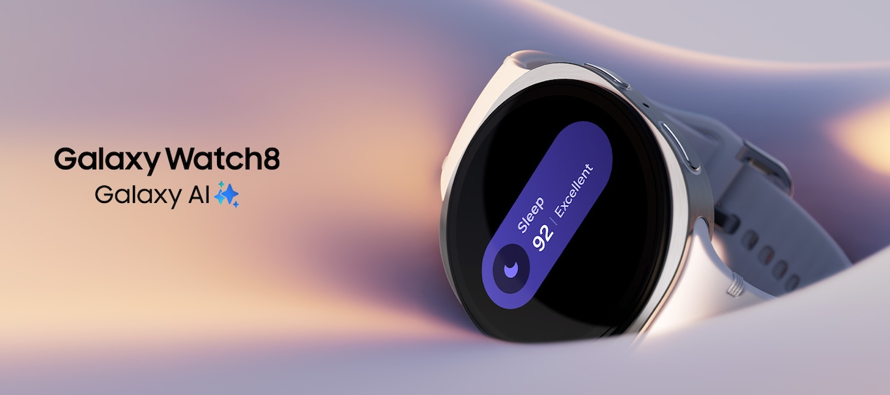

!Galaxy Watch8! Llega a México
Fecha de lanzamiento.
El 25 de julio de 2025 fue la fecha oficial en que el Galaxy Watch 8 llegó a México, poniendo a disposición de los usuarios sus innovadoras características tecnológicas.
Características.
Integra el procesador Exynos W1000 fabricado con tecnología de 3 nm, cuenta con 2 GB de RAM y versiones con 32 GB o 64 GB de almacenamiento interno.
En cuanto a energía ofrece lo siguiente:
Ofrece baterías de "325 mAh (40 mm) o 435 mAh (44 mm)"" con carga rápida inalámbrica.
Además, incorpora funciones avanzadas de salud como sensores ECG, BIA,monitoreo de sueño, más de 100 modos deportivos y conectividad moderna con Bluetooth,Wi-Fi y GPS.